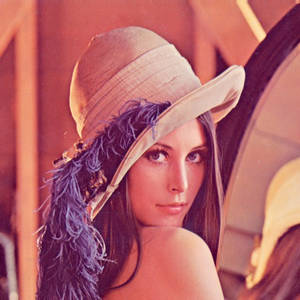
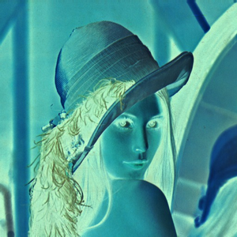
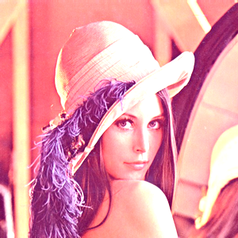
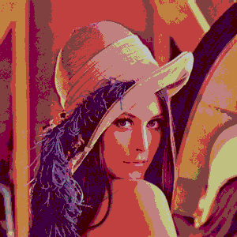

Image Processing
in C
A pixel-level image processing library written in C — handling PPM and PGM formats with LUT-based filters, resampling, and binary I/O.
The objective was to build a complete image processing library from scratch in C — no external libraries, no shortcuts. Every pixel operation had to be written by hand, from file parsing to filter application.
The project targets two binary image formats : PPM (Portable Pixmap, color) and PGM (Portable Graymap, grayscale). Both store raw pixel data in binary after a plain-text header, which means the parser has to handle the byte stream precisely — wrong indexing corrupts the entire image.
The library covers the full pipeline : reading and writing files, manipulating pixels through abstracted structures, applying photometric operations, and resampling images at arbitrary resolutions using two distinct interpolation methods.
Color images
Each pixel stores three bytes: R, G, B components. 3 × width × height bytes of binary data.
Grayscale images
Each pixel is a single intensity byte. width × height bytes of binary data.
A Look-Up Table is a 256-entry array that maps each possible intensity value (0–255) to a new one. Instead of computing a formula per pixel, the transformation is pre-computed once and applied in O(1) per channel.
The same apply_lut() function handles both PPM and PGM: for color images it iterates over all three channels; for grayscale, just the intensity. This uniform interface means any filter reduces to filling a table.
table[i] = 255 - i — negates all intensities.LUTS APPLIED ON COLOR

ORIGINAL

INVERTED

BRIGHTENED ×1.6

LEVELS n=4
LUTS APPLIED ON GRAYSCALE
ORIGINAL
INVERTED
NORMALIZED
LEVELS n=4
ARITHMETIC — brighten, difference, melt
ORIGINAL
BRIGHTENED
DIFFERENCE
MELT
CHANNEL SPLIT → GRAYSCALE CONVERSION
ORIGINAL (PPM)
R CHANNEL
G CHANNEL
B CHANNEL
GRAYSCALE RECONSTITUED (PGM)
4× UPSCALE — nearest neighbour vs. bilinear interpolation
NEAREST NEIGHBOUR — block artefacts
BILINEAR — smooth weighted average
Pixel primitives
Typed getters and setters for pixel_ppm and pixel_pgm. Encapsulates memory layout — callers never touch raw byte offsets directly. Also provides get_luminosity() for color-to-gray conversion.
Image management
Core library. Handles creation, copy, I/O (read_picture, write_picture), format conversion, channel splitting/merging, all arithmetic operations, and both resampling methods.
LUT engine
Creates, populates and applies lookup tables. The central function apply_lut(picture*, lut) iterates over every pixel and replaces each component value using the table — uniform interface for any filter.
File utilities
Extracts file extensions from paths to validate format consistency at write time — ensures a PPM buffer is never accidentally written to a .pgm file and vice versa.
SOURCE CODE
Full implementation on GitHub — PPM/PGM I/O, photometric ops, LUT filters, bilinear & nearest resampling.